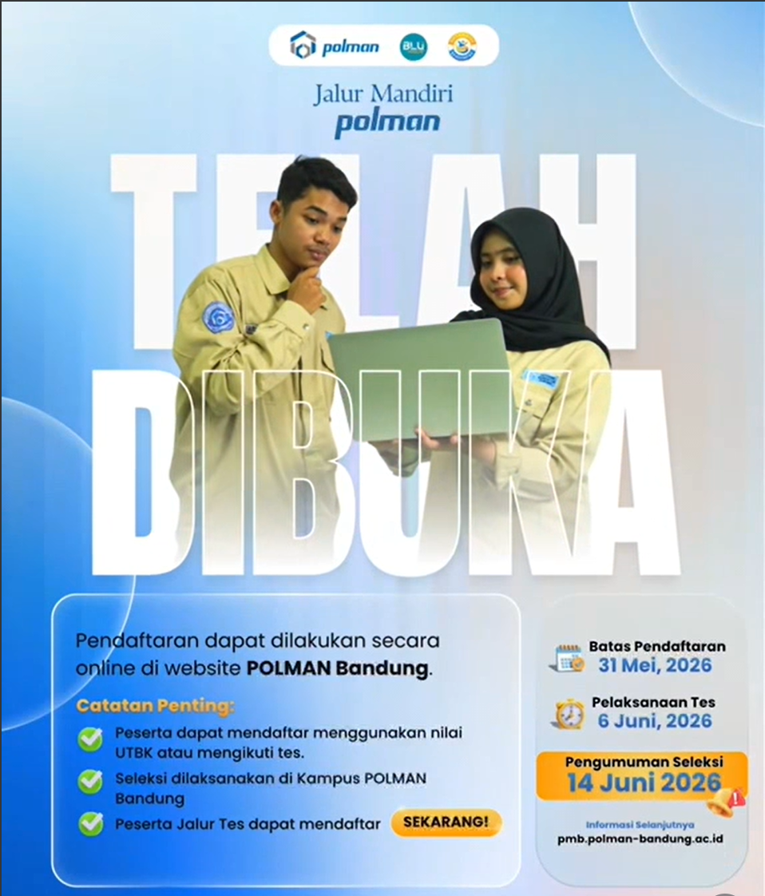

Akademik

Pendaftaran Mahasiswa Baru Tahun Ajaran 2026/2027 Resmi Dibuka
Politeknik Manufaktur Bandung membuka penerimaan mahasiswa baru melalui beberapa jalur seleksi. Persiapkan diri Anda untuk bergabung bersama kampus vokasi manufaktur terbaik.
Baca Selengkapnya